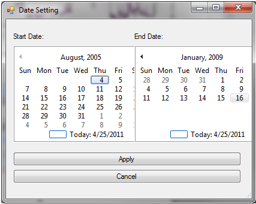

Setting the Date Range
You can restrict the date range of the data shown in the Graph View plot using the following steps. The plot is drawn for the selected date range, and the summary statistics are calculated only for data that fall within the selected range.
- Select one or more time series from the Series Selection Tool to create a plot in the Graph View. You will notice that the start date and end date for the selected time series are shown in the Graph View ribbon.
- Click the “Date Setting” button. A window will pop up that allows you to select a start date and an end date for the plot. When you have selected an appropriate date range, click the “Apply” button.

- You will notice that the plot has been restricted to the selected date range.
- You can easily reset the plot to the full date range by clicking the check box next to the “Display Full Date Range” option on the Graph View ribbon.